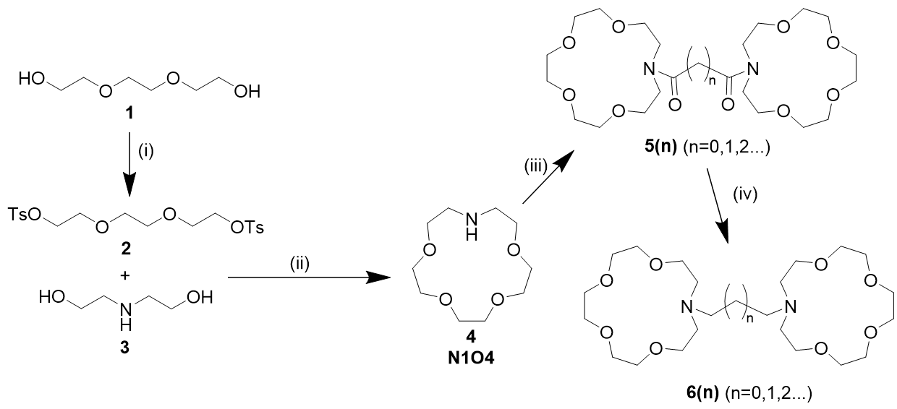

To be finished....
To be finished....
合成一类双aza-15-crown-5(N1O4)环的配体；
制作其Eu(II)配合物；
表征所得配合物的光谱、荧光寿命和量子产率。

1. triethylene glycol ditosylate(2)的合成：
概况：两次合成收率94.0%与93.9%，NMR纯。
实验条件：在250 mL三口瓶中加入对甲苯磺酰氯(24.329 g, 127 mmol, 2.04 eq.)、三甘醇1(9.389 g, 62.5 g, 1 eq.)和65 mL二氯甲烷，
将三口瓶置于冰水浴中，并缓慢加入NaOH固体(20.565 g, 514 mmol, 8.22 eq.)，控制反应液温度在0~5℃范围内。
投料完成后，在室温下反应4 h。反应结束后加入60 mL二氯甲烷与75 mL水，倾析除去不溶固体，分离出有机相并用水(10 mL × 3)洗涤。
有机相经Na2SO4干燥后旋蒸除去溶剂，得到白色晶体2(26.925 g, 58.7 mmol, 93.9%)。
1H NMR (400 MHz, Chloroform-d) δ 7.79 (m, 4H), 7.34 (d, J = 8.0 Hz, 4H), 4.14 (dd, J = 5.7, 3.9 Hz, 4H),
3.66 (m, 4H), 3.53 (s, 4H), 2.45 (s, 6H).
核磁共振氢谱：第一次
第二次
2. aza-15-crown-5(4)的合成
概况：两次合成失败，一次进行中
实验条件：在1L三口瓶中，在Ar气氛下向400 mL经Na2SO4干燥的叔丁醇中加入金属钠(2.361 g, 102.7 mmol, 2.771 eq.)，
在Ar气氛和60℃下反应22 h，得到tBuONa溶液。
向上述溶液中加入二乙醇胺3(4.250 g, 40.46 mmol, 1.09 eq.)，搅拌充分溶解。
将2(16.993 g, 37.058 mmol, 1 eq.)溶于150 mL超干1,4-二氧六环中，并在50℃下缓慢滴加到三口瓶中，耗时6 h。
滴加完成后在50℃下反应2 h，TLC检测反应原料完全转化后，将反应液降至室温。
过滤除去不溶固体，并用少量二氯甲烷冲洗滤渣，洗涤液合并入滤液中。
所得溶液旋蒸除去溶剂后，加入60 mL水，用正己烷(10 mL × 1)洗涤，并用二氯甲烷(20 mL × 8)萃取。
所得二氯甲烷溶液旋蒸除去溶剂，在xx℃下蒸馏，收集xx℃馏分，得到xxxxx。
第一次合成失败原因：直接用tBuONa固体代替Na，但tBuONa无法溶于叔丁醇。
TLC显示原料2未转化，蒸馏仅在蒸馏头壁上得到极少量挂壁液珠，核磁显示成分为二氧六环，无产物峰。
蒸馏头壁上液珠的核磁共振氢谱
第二次合成失败原因：(1)溶剂未除水，导致产生的tBuONa的量低于2 eq.，TLC显示原料2部分转化。
(2)反应规模太小，100%转化也仅有不到3 g产物，蒸馏时有少量液体（总量约1mL）生成，难以被冷阱捕获并收集。
刮下容器壁内液滴进行核磁，显示有产物峰，但杂质多。
烧瓶壁上无色液体的核磁共振氢谱及其细节
第三次合成进行中，使用严格除水条件并放大3倍投料量。TLC显示原料转化完全，已得粗产品，待蒸馏提纯。
To be finished....
To be finished....
截至04.01，配体四步合成的第一步已完成，第二步仍在尝试中。
{kind=link}
{kind=link}
{kind=link}
{kind=link}
{kind=link}